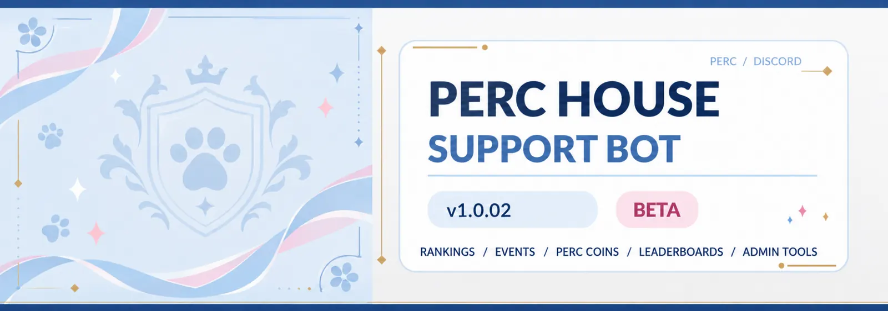

← PERC House / Support Bot
PERC HOUSE / DISCORD
PERC HOUSE
SUPPORT BOT ✦
A private community turned competitive universe. PERC Bot tracks qualifying activity, manages rankings, powers rivalries, organizes events and remembers its champions.
PERC stands forPatrick · Ella · Ryan · Cohen
Version v1.0.02BETABuilt by Coco
PERC HOUSE ✦ BETA PROJECT

06Ranking tiers
01Mythic champion slot
MonthlyCompetition cycles
Nov 01Cycle 01 planned for 2026
PERC / COMMUNITY PULSE
The competition, at a glance.
A home for live standings and cycle history once Betelgeuse is connected.
View rankings and trophies
01 / Overview
Built for the people in the server.
This isn't a generic moderation utility. The bot turns everyday conversation into shared stories, friendly rivalries and group traditions, without making members manually manage their roles.
Dynamic standings
Competitive positions shift as members overtake each other in eligible message activity. Discord roles update to reflect rank.
Anti-spam scoring
Rapid posts, duplicates and low-effort punctuation don't contribute to the leaderboard. Messages aren't automatically deleted for failing the count.
Long-term legacy
Seasonal totals reset each month while lifetime progress, achievements and historical champions can be preserved.
02 / Rarity system
Six ranks. One peak.
Members start at Common. As the monthly leaderboard changes, promotions and demotions can happen without a manual request.
01CommonStarting rank for new members
02UncommonGrowing participation
03RareConsistently active members
04EpicNear the top of the standings
05LegendaryExtremely limited, prestigious tier
06Mythic ✦One champion; unlocks at 20 server members
03 / PERC Cycles
A fresh fight every month.
First official cycle scheduled for November 1, 2026. The period before that uses an accessible-message-history preseason leaderboard.
Monthly reset · Lifetime statistics preservedTakeover Arena
Climbing past another member can trigger a takeover announcement with specially formatted embeds and graphics. Repeat clashes create rivalries, first takeovers, and revenge moments.
/war/rivalHall of Fame & achievements
Cycle winners can be recorded for posterity. Member profiles also recognize milestones, top-tier ranks and comeback achievements.
/halloffame/profilePERC Coins
A server currency tied to competition and activity. Rewards and a larger economy can be expanded with community input.
/balance04 / Community tools
More than a leaderboard.
Events & headcounts
Admins can create scheduled events. Members register by event ID, and attendance lists update as people join or leave.
/headcountTemporary event roles
Supported events can grant participants a temporary event role. Game-night headcounts work without requiring that role.
Owner management
Restricted tools cover role syncing, leaderboard maintenance, historical backfills, announcements and moderation. These aren't public commands.
05 / Bot commands
For everyone in PERC.
A quick reference to public-facing commands described for v1.0.02. The bot's own /commands menu is the most reliable list as beta releases evolve.
/rankYour current ranking/leaderboardSeasonal standings/rivalWho's just ahead/profileStats and achievements/statsCommunity activity stats/halloffamePrevious cycle champions/warTakeover and rivalry history/balancePERC Coins balance/headcountRegister for an event/gymToggle the Gym role/speakSpeak through the bot, subject to limits/commandsIn-Discord command helpSome actions may require a running event, eligible server role, or configured channel. Owner-only tools are intentionally omitted here.
06 / Under the hood
Built by Coco. Hosted on Betelgeuse.
PERC Bot is a modular Python project developed with discord.py and SQLite. It uses asynchronous Discord event handling and creates graphics for competitive announcements.
Its production home is Betelgeuse, a dedicated Linux (Kali) laptop. Merope-C itself is hosted separately on Polaris, the Dell PowerEdge R640 Ubuntu web server.
RELEASE HISTORY
What's new with PERC Bot.
CURRENT BETA
BETAv1.0.02
Current project version. Detailed change entries and dates will be imported from the verified bot changelog when available.
Full changelog and earlier releases
Release history is awaiting the bot's official CHANGELOG.md or release records. No entries have been fabricated.
07 / Next updates
Still evolving.
Diagnostics & reliability
Continued work on heartbeat monitoring, responsiveness, event-loop delays, slow database work and recovery visibility. Operational details remain owner-only.
Read-only website status
Planned public online/offline indicator for PERC Bot on Merope-C, with detailed monitoring reserved for a secure administrator dashboard.
More community history
Expanding the achievement library, cycle archives, rivalry statistics, and automatic reminders over time.
PERC Bot is a private-server beta. Live status, standings, and trophy records will appear only after the read-only integration has been deployed and verified.